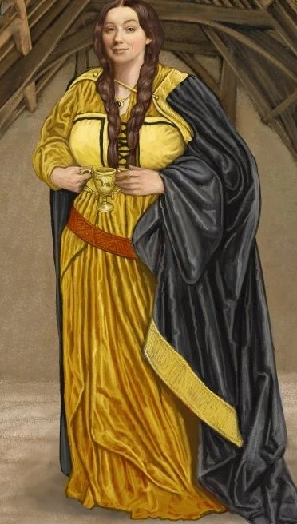

A Lufa-Lufa, fundada por Helga Hufflepuff, é uma das quatro casas da Escola de Magia e Bruxaria de Hogwarts, sendo conhecida como a mais inclusiva entre as outras três; valorizando o trabalho árduo, a dedicação, a paciência, a lealdade e o jogo limpo ao invés de uma aptidão particular de seus membros. Seu animal emblemático é um texugo e suas cores são o amarelo e o preto. A diretora da casa mais notável é a Mestra de Herbologia Pomona Sprout e seu fantasma patrono é o Frei Gorducho. A casa corresponde aproximadamente ao elemento terra, e é por essa razão que suas cores foram escolhidas: o amarelo representa o trigo, enquanto o preto um símbolo do solo. Os estudantes classificados para a Lufa-Lufa comumente demonstram habilidades excepcionais em Herbologia, dado à correspondência da casa com a terra.
Principais Bruxos:
Newt Scamande:

Newt Scamander, um dos bruxos mais renomados do mundo mágico, é conhecido como o autor de "Animais Fantásticos e Onde Habitam" e é um personagem emblemático da Lufa-Lufa. Durante seus anos em Hogwarts, Newt se destacou por sua paixão pelas criaturas mágicas, demonstrando um profundo respeito e empatia por elas, características que são valorizadas na Lufa-Lufa. Após se formar, Newt viajou pelo mundo, estudando e documentando diversas espécies de criaturas mágicas. Seu trabalho não apenas ampliou o conhecimento sobre esses seres, mas também ajudou a promover a conservação e o respeito por eles, o que se alinha aos valores da Lufa-Lufa, como lealdade e trabalho duro. Em "Animais Fantásticos e Onde Habitam", Newt se torna um herói involuntário, envolvendo-se em uma série de eventos que desvendam conflitos no mundo bruxo e a ascensão de forças das trevas. Sua coragem e determinação em proteger as criaturas mágicas, mesmo diante de adversidades, refletem o espírito solidário da Lufa-Lufa. Newt Scamander é um exemplo de como os valores da Lufa-Lufa podem levar a grandes feitos, mostrando que a paixão e a compaixão podem impactar o mundo de maneiras significativas..

Ninfadora Tonks é uma bruxa notável da Lufa-Lufa, reconhecida por sua coragem e lealdade durante a Segunda Guerra Bruxa. Como Auror, ela dedicou sua vida à luta contra as forças das trevas, demonstrando bravura e determinação em diversas situações perigosas. Tonks era uma metamorfomaga, capaz de mudar sua aparência à vontade, o que não apenas a tornava uma combatente versátil, mas também refletia a filosofia da Lufa-Lufa de aceitar e valorizar a diversidade. Sua habilidade em se adaptar e se transformar era um grande trunfo em suas missões como Auror. Durante a guerra, Tonks se destacou ao se juntar à Ordem da Fênix, ajudando a proteger Hogwarts e seus aliados. Sua coragem foi especialmente evidente durante a Batalha de Hogwarts, onde lutou bravamente ao lado de seus amigos e colegas, mostrando um forte senso de lealdade. Além de suas proezas no combate, Tonks também é lembrada por sua bondade e empatia. Seu relacionamento com Remo Lupin, um outro membro da Ordem, exemplifica sua capacidade de amar e apoiar aqueles ao seu redor, mesmo em tempos de grande adversidade. Ninfadora Tonks é uma verdadeira heroína da Lufa-Lufa, refletindo os valores da casa através de seu compromisso com a justiça, sua coragem inabalável e sua disposição para lutar por aqueles que ama.

Susana Bones é uma bruxa notável da Lufa-Lufa, conhecida por sua bravura e compromisso com a justiça. Ela é uma das personagens que, embora tenha um papel mais sutil na série "Harry Potter", representa os valores fundamentais de sua casa: lealdade, trabalho duro e coragem. Susana foi membro da Ordem da Fênix, onde se destacou por sua dedicação na luta contra as forças das trevas durante a Segunda Guerra Bruxa. Seu papel como Auror, embora não amplamente explorado na narrativa, revela seu forte senso de dever e sua disposição para enfrentar perigos em defesa dos inocentes. Além de seu trabalho na Ordem, Susana é mencionada em algumas das histórias de fundo, destacando sua habilidade em magia e sua determinação em se opor à opressão que os bruxos e bruxas enfrentavam. Sua lealdade aos amigos e sua coragem em situações difíceis a tornaram uma figura respeitada entre seus colegas. Susana Bones exemplifica os ideais da Lufa-Lufa, mostrando que até mesmo aqueles que não estão em primeiro plano podem ter um impacto significativo na luta pela justiça e na proteção dos valores que prezam.
CLIQUE NA IMAGEM PARA SABER MAIS SOBRE O FUNDADOR:
